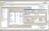
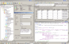

Version en ligne
Tutoriel : MySQL et PostGreSQL : lequel choisir ?
Table des matières
MySQL et PostGreSQL : lequel choisir ?
Bonjour,
Nombreux sont les comparatifs de PostGreSQL et de MySQL sur le web. J'en ai lu plusieurs, mais à chaque fois j'ai eu le même problème :
Soit l'article en question était dépassé, ou pire, il ne prenait en compte que les modifications récentes d'un des deux SGBDR (partialité).
Soit il montrait clairement son hostilité à l'égard d'un des deux SGBDR.
Il y a d'autres raisons pour lesquelles j'ai été déçu par certains de ces articles. Finalement j'ai toujours dû me faire ma propre idée, et mon but aujourd'hui est de fournir les résultats de mes recherches à la communauté. Et ce avec le moins de subjectivité possible, et des données qui seront plus ou moins exactes, j'ai utilisé MySQL et PostGreSQL, chacun a ses limites, chacun a ses avantages.
La finalité de cet article ne sera pas de dire que l'un est mieux que l'autre, ce sera juste de fournir des informations sur chacun des deux SGBDR, afin que vous puissiez vous faire votre propre idée de chacun et décider si pour votre projet, il vaudrait mieux utiliser MySQL ou PostGreSQL... ou aucun des deux !
Si cet article contient des erreurs ou des imprécisions, je vous invite à me le faire remarquer par MP, je serais ravi de mettre à jour l'article, comme je l'ai mentionné plus haut, une comparaison qui n'est plus à jour n'est plus utile !
Comparaison générale
Version et ancienneté
Alors qu'on voit apparaître le nom "MySQL" pour la première fois en 1995, PostGreSQL s'était déjà créé une place plus que confortable dans le domaine des SGBDR puisqu'il était le successeur de Ingres, développé depuis 1977 et ayant obtenu un succès considérable. PostGreSQL, contrairement à Ingres, est libre et opensource.
A l'heure où je vous parle, la dernière version stable de MySQL est la 5.0.45, mais les versions 5.1.20 et 6.0.0 sont disponibles respectivement en versions bêta et alpha.
Quant à PostGreSQL, il est disponible en version 8.2.4. Mais la version 8.3 est en cours de développement et sortira en release incessamment sous peu. :)
Longtemps, PostGreSQL a été mis de côté parce qu'il ne fonctionnait pas sous Windows mais uniquement sous les systèmes UNIX. Bon nombre de programmeurs ne s'en servaient donc pas. Depuis la version 8.0 sortie il y a quelques années déjà, c'est possible et l'installation se fait en quelques clics de souris. Malheureusement certains semblent ne pas encore s'en être rendu compte et continuent à clamer que c'est un gros défaut de PostGreSQL, menant ainsi des programmeurs à se tourner vers un autre SGBDR sans avoir vu la puissance de PostGreSQL.
MySQL quant à lui a toujours fonctionné sous les deux plates-formes à ma connaissance. En tout cas personne actuellement ne doute du fait qu'il soit utilisable sous UNIX aussi bien que sous Windows.
Du côté de l'utilisation, alors que MySQL est pratiquement directement utilisable en production (il n'y a pas 36 paramètres à modifier), PostGreSQL est proprement inutilisable en production si on ne regarde pas du côté des fichiers de configuration. Il requiert donc un minimum de lecture si on installe le serveur soi-même. Par contre si vous l'installez sur votre pc juste pour faire des tests en local, un enfant de 10 ans n'aurait pas de difficultés à créer une table. En effet PostGreSQL est livré avec un outil "PgAdmin III" vraiment très bien conçu. Évidemment MySQL aussi propose des outils de ce genre mais il faut chercher un peu avant d'en trouver un bon. Personnellement je trouve que ceux qui sont proposés par MySQL n'ont rien d'extraordinaire, mais je suis subjectif sur ce point. Je vous laisse tester "MySQL Administrator" et "MySQL Query Browser". :)
Les GUI MySQL et PostGreSQL
Communauté et support
Bien qu'en France, l'utilisation de PostGreSQL ne soit pas très répandue, la communauté PostGreSQL française est très active, plus que celle de MySQL d'ailleurs... La documentation au format DocBook a vu le jour en Français pour commencer, puis la version anglaise y est passée aussi.
En parlant de documentation, celle de MySQL est souvent obscure sur plusieurs points, si bien que vous serez souvent obligés de lire les commentaires pour y trouver entière satisfaction. La doc PostGreSQL n'est pas parfaite mais je n'ai jamais eu à me référer aux commentaires pour comprendre quelque chose (par contre une fois ou deux j'ai dû demander à Google, mais PostGreSQL n'a pas la palme de ce côté :p ).
Si vous avez un problème avec PostGreSQL vous aurez donc plus de chances de trouver de l'aide rapidement, mais finalement tous les SGBDR sont un peu liés, donc si vous trouvez la solution pour PostGreSQL, celle de MySQL n'est en général pas fort loin si elle ne fait pas appel à des techniques relativement avancées. :)
Fonctionnalités
Respect de la norme SQL2003
Vous vous en doutez, sur ce point PostGreSQL a un avantage évident.
Alors que MySQL ne cesse de faire des écarts au niveau de la norme (des opérateurs de base tels que celui de la concaténation (||) ne sont pas respectés !), PostGreSQL fait de son mieux pour s'y coller. Ainsi sur 164 points requis pour avoir une conformité complète du "coeur" du standard SQL, PostGreSQL en respecte plus de 150, et pas des moindres !
Fonctionnalités en général
Bien que PostGreSQL soit plus avancé technologiquement que MySQL, il a une lacune en vitesse sur les faibles volumes de données. Ainsi MySQL, par le fait qu'il ne gère pas l'intégrité référentielle par exemple, se révèle plus rapide que PostGreSQL puisqu'il ne doit pas faire les tests d'intégrité (qui permettent de vérifier qu'une base de données est cohérente pour rappel).
MySQL est jeune, bien plus que PostGreSQL, mais il a connu un développement plus qu'honorable et supporte depuis sa version 5 beaucoup d'aspects du langage SQL. Je pense en particulier aux vues, triggers et UDF qui ont été rajoutés dans cette version, ainsi qu'aux sous-requêtes implémentées depuis la version 4.1.
Malgré tout, PostGreSQL garde l'avantage avec une panoplie beaucoup plus étendue: il gère en plus les règles, les types utilisateur, les tableaux, des langages procéduraux tels que PHP, Python, Java et bien d'autres.
PostGreSQL jouit également d'un système d'extensions vraiment utile et d'autres aspects moins connus mais bien pratique de la norme tels que les règles qui permettent d'insérer des données depuis une vue par exemple, les séquences (équivalent avancé de l'auto incrément de MySQL), les domaines (types sur lesquels on peut apposer une contrainte et réutilisables), ainsi que bien d'autres.
Vu comme ça on serait tenté de dire que PostGreSQL est mieux. En effet il a plus de fonctionnalités, mais chacune d'entre elles a un prix sur le temps d'exécution des requêtes, ce qui fait que sur les petits volumes de données (moins de 1 giga environ), PostGreSQL est souvent moins rapide que MySQL au traitement des requêtes. Par contre il garantit une cohérence quasi-totale des données si la base de données est bien faite.
Autre point important : lorsqu'un débutant ouvre PgAdmin III pour la première fois, il est un peu dérouté, ça m'est arrivé, il y a tellement d'options tout partout qu'on ne sait pas trop par où commencer pour la création de la base de données. De ce point de vue une première expérience avec un SGBDR simple tel que MySQL est souvent une bonne chose avant de s'attaquer à PostGreSQL qui est complet mais également complexe au début.
Deux outils différents
Vous ne trouverez pas de benchmarks dans cet article. En effet, on ne peut pas comparer des pommes et des poires : PostGreSQL et MySQL ne sont pas prévus pour la même chose !
MySQL s'occupe avec excellence des petits volumes de données, avec un faible nombre d'utilisateurs.
En effet, dans ces cas là l'intégrité référentielle n'est souvent pas nécessaire puisqu'il est rare que plusieurs utilisateurs agissent simultanément sur la même table et encore plus sur le même enregistrement.
La vitesse d'exécution des requêtes s'en retrouve accélérée, ce qui explique les résultats incomparables de MySQL sur ce genre de base de données.
PostGreSQL par contre peut gérer les très gros volumes de données. Des bases de 13 teras (~ 13 000 gigas !) existent et tournent parfaitement sous PostGreSQL. Son optimiseur fait des merveilles à partir du moment où il y a suffisamment de données pour qu'il soit efficace.
Bien sûr, il faut que le serveur soit parfaitement configuré et la base parfaitement entretenue (VACUUM et ANALYSE réguliers par exemple).
Gérer une base de données n'est pas une chose simple, surtout si on veut bien le faire. MySQL a permis à tout un chacun de s'essayer dans ce domaine, mais pour moi ce n'est pas réellement un SGBDR. Attention il convient parfaitement pour la plupart des sites web, mais ce n'est pas pour rien que SourceForge pour ne citer que lui a fini par abandonner MySQL pour passer à PostGreSQL. Pour ceux qui ont connu ce moment, vous avez connu également la différence considérable de performances : MySQL n'était tout simplement plus capable de gérer une base de données devenue trop grosse et trop complexe.
Témoignage : La tentative de passage à PostGreSQL sur le SdZ
Beaucoup me l'ont demandé, y compris le validateur qui s'est occupé de mon tutoriel. :p
Pour ceux qui ne le savent pas j'ai participé durant un court instant à l'évolution du Site du Zér0. Un de nos projets à cette époque était de passer le site à PostGreSQL car MySQL montrait de gros signes de faiblesse.
Karamilo, winzou et moi avons donc essayé de passer toute la base de données à PostGreSQL.
Je vous donne les évènements tels que je m'en souviens, il y a plus que certainement des inexactitudes...
Le premier problème sur lequel nous sommes tombés était le transfert des données. MySQL ne gérant pas l'intégrité référentielle, des erreurs s'étaient glissées dans la base de données et rendaient l'application des clefs étrangères impossible. Nous avons eu beaucoup d'autres problèmes surtout au niveau du système des tutos et c'est d'ailleurs à ce moment que nous avons décidé de repenser le système...
Nous avons finalement réussi à faire rentrer les données de la version dev du site (et nous redoutions déjà le moment où il faudrait transférer le "vrai" Site du Zér0...).
Une fois que ce fût fait nous dûmes adapter le code PHP pour qu'il puisse exploiter la base... Je ne vous raconte pas la galère. ^^
Des tas de requêtes n'étaient pas valides, nous avons dû passer au peigne fin tout le code pour effacer les dernières traces des mauvaises habitudes prises avec MySQL...
Tout cela nous avait pris pas mal de temps, si bien que notre version PostGreSQL prenait beaucoup de retard sur la vraie qui continuait d'évoluer.
Les temps de réponse donnés par PostGreSQL n'étaient pas bons du tout, nous avons cherché dans les fichiers de configuration, passé des journées sur Google, mais à l'époque ni kara ni winzou ni moi-même ne nous y connaissions vraiment en tuning server de PostGreSQL... Si c'était à refaire ce serait peut-être différent... A l'époque nous n'avions qu'un serveur (Bart), et tout mettre sur le même serveur (PHP + PostGreSQL + Stats + Backup + ...) n'était vraiment pas l'idéal, en effet un SGBDR ne fonctionne bien que s'il a à sa disposition l'entièreté des ressources du serveur... L'idéal aurait été qu'il ait juste une connexion LAN avec un serveur PHP mais ce n'était absolument pas possible à l'époque.
Nous avons finalement abandonné en voyant le retard pris par rapport au SdZ en production et au temps perdu pour ne voir aucune amélioration. Nous avons décidé qu'optimiser le code serait un meilleur investissement. Et actuellement ce choix semble avoir été le bon. :)
Tout cela pour vous montrer à quel point il est complexe de changer de SGBDR. Remarquez qu'un passage de PostGreSQL à MySQL aurait également été vraiment compliqué étant donné qu'il aurait fallu gérer beaucoup de fonctionnalités habituellement gérées par le SGBDR dans le code PHP, autant dire mission suicide. ^^
Le mieux est donc de prévoir dès le début la taille de votre base de données et d'estimer s'il vaut mieux prendre MySQL ou PostGreSQL, le passage par la suite est possible mais loin d'être simple. :)
En conclusion, il faut utiliser l'outil adéquat pour chaque projet :
- MySQL pour les petites bases de données avec un nombre faible d'accès.
- PostGreSQL pour les bases de données plus grosses (inutile et idiot d'utiliser PostGreSQL pour un site qui affiche un livre d'or et une galerie de photos...).
J'espère que cet article vous a été utile et que vous ne regrettez pas le hasard qui vous a amené ici... :)
Bonne journée !
{kind=link}
{kind=link}